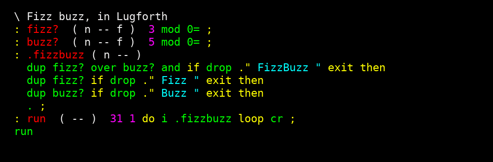

Lugforth
Fork non officiel de uEforth (Bradley D. Nelson), un Forth
amorcé depuis un petit noyau C, que j'ai étendu : liaisons SDL2 (fenêtre, dessin, son,
musique ABC et soundfont), une console graphique avec sélecteur de couleurs et polices
système, un éditeur de ligne avec historique et complétion, deux éditeurs de texte
(ed pour le code, writhdeck pour écrire, avec thèmes de couleurs dont colorForth), des
exemples (batterie, casse-briques, roguelike, piano roll), et des portages : Android (un
APK), web, Game Boy Advance, Raspberry Pi Pico et ESP32. Un seul fichier exécutable suffit
sous Linux (lugforth, ou lugforth-mini sans éditeurs ni SDL2), plus un AppImage et un
APK.

wmdcalc et wmdockapps
wmdcalc est une petite calculatrice en dock app pour Window Maker, avec trois modes de saisie : Forth (notation polonaise inverse), Lisp (s-expressions) et classique. Une fenêtre popup offre un grand clavier, et la saisie au clavier et le presse-papiers sont gérés. Elle repose sur mon fork de wmdockapps, une bibliothèque C++ pour écrire des dock apps avec thèmes (l'image montre les applications fournies avec).
[images/wmdockapps.webp]